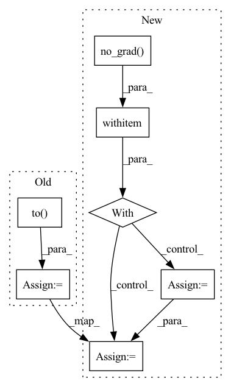

Pattern ID :2874

Before Change
tokens_replaced = logits_masked.multinomial(num_samples=1, replacement=True).view(-1)
input_ids_disc = labels.clone()
input_ids_disc[masked_bool] = tokens_replaced
labels_disc = (input_ids_disc != labels).to(torch.long)
outputs_disc = self.discriminator(
input_ids=input_ids_disc, attention_mask=attention_mask, token_type_ids=token_type_ids,
position_ids=position_ids, head_mask=head_mask, inputs_embeds=inputs_embeds,
After Change
loss_gen = outputs_gen.loss // (1,)
logits_gen = outputs_gen.logits // (batch_size, seq_length, config.vocab_size)
with torch.no_grad():
masked_bool = (labels == -100)
// logits_masked: (batch_size*masked_length, config.vocab_size)
// logits_masked = F.softmax(logits_gen[masked_bool].reshape(-1, self.discriminator.electra.config.vocab_size), dim=1)
// replaced tokens are set with logits
// tokens_replaced = logits_masked.multinomial(num_samples=1, replacement=True).reshape(-1)
logits = logits_gen[masked_bool]//.reshape(-1, self.discriminator.electra.config.vocab_size)
gumbel = self.gumbel_dist.sample(logits.shape)//.to(logits.device)
tokens_replaced = (logits + gumbel).argmax(dim=-1)
input_ids_disc = labels.clone()
input_ids_disc[masked_bool] = tokens_replaced
labels_disc = (input_ids_disc != labels)//.to(torch.long)
outputs_disc = self.discriminator(
input_ids=input_ids_disc, attention_mask=attention_mask, token_type_ids=token_type_ids,
In pattern: SUPERPATTERN
Frequency: 4
Non-data size: 7
Instances
Fragment ID: 11317805
Project Name: retarfi/language-pretraining
Commit Name: ea8063480044fc1c8e844831355b7feb7edee091
Time: 2021-07-15
Author: valerososoccer@gmail.com
File Name: utils/model.py
M Class Name: ElectraForPretrainingModel
N Class Name: ElectraForPretrainingModel
M Method Name: forward(11)
N Method Name: forward(11)
M Parent Class: PreTrainedModel
N Parent Class: PreTrainedModel
M File Name: utils/model.py
N File Name: utils/model.py
M Start Line: 60
M End Line: 68
N Start Line: 69
N End Line: 83
'>
Before Change
self.replay_buffer.store(
self._states, self._actions, reward, states)
self._states = states
actions = self.policy.eval(states.to(self.device))
actions = actions + self._noise_policy.sample([actions.shape[0]])
self._actions = Action(actions).to("cpu")
return self._actions
After Change
self._replay_buffer.store(
self._states, self._actions, reward, states)
self._states = states
with torch.no_grad():
actions = self._policy_model(states)
actions = actions + self._noise_policy.sample([actions.shape[0]])
self._actions = Action(actions)
return self._actions
'>
Fragment ID: 11317801
Project Name: syuntoku14/pytorch-rl-il
Commit Name: 76defe6cb7c6e9bab65823acd587275d83d1ea9c
Time: 2020-04-08
Author: syuntoku14@gmail.com
File Name: rlil/agents/td3.py
M Class Name: TD3LazyAgent
N Class Name: TD3LazyAgent
M Method Name: act(3)
N Method Name: act(3)
M Parent Class: LazyAgent
N Parent Class: LazyAgent
M File Name: rlil/agents/td3.py
N File Name: rlil/agents/td3.py
M Start Line: 138
M End Line: 140
N Start Line: 149
N End Line: 152
'>
Before Change
if i >= 10: break
frames = frames.to(DEVICE) // [1, T, 3, h, w]
frames_vis = postprocess_img(frames.squeeze(dim=0)) // [T, 3, h, w]
input = frames[:, :VIDEO_IN_LENGTH] // [1, t, 3, h, w]
pred_rgb = pred_rgb_model.pred_n(input, pred_length=VIDEO_PRED_LENGTH) // [1, T, 3, h, w]
pred_rgb_vis = postprocess_img(pred_rgb) // [T, 3, h, w]
pred_rgb = torch.cat([input, pred_rgb], dim=1)
pred_rgb = torch.stack([seg_model(pred_rgb[:, i]) for i in range(pred_rgb.shape[1])], dim=1)
pred_rgb = pred_rgb.argmax(dim=2).squeeze() // [T, h, w]
pred_then_colorized_vis = colorize_semseg(postprocess_mask(pred_rgb), num_classes=SYNPICK_CLASSES) // [T, 3, h, w]
After Change
test_loader = DataLoader(test_data, batch_size=1, shuffle=True, num_workers=4)
iter_loader = iter(test_loader)
with torch.no_grad():
for i in tqdm(range(10)):
frames = next(iter_loader).to(DEVICE) // [1, T, 3, h, w]
frames_vis = postprocess_img(frames.squeeze(dim=0)) // [T, 3, h, w]
input = frames[:, :VIDEO_IN_LENGTH] // [1, t, 3, h, w]
pred_rgb = pred_rgb_model.pred_n(input, pred_length=VIDEO_PRED_LENGTH)
pred_rgb = torch.cat([input, pred_rgb], dim=1) // [1, T, 3, h, w]
pred_rgb_vis = postprocess_img(pred_rgb.squeeze(dim=0)) // [T, 3, h, w]
pred_rgb = torch.stack([seg_model(pred_rgb[:, i]) for i in range(pred_rgb.shape[1])], dim=1)
'>
Fragment ID: 11317819
Project Name: ais-bonn/vp-suite
Commit Name: 13016d4ab8ba4f8e7ee087155a6c5171f4d00ba3
Time: 2021-08-02
Author: boltres@ais.uni-bonn.de
File Name: scripts/visualize_4_way.py
M Class Name: AnonimousClass
N Class Name: AnonimousClass
M Method Name: visualize_4_way(1)
N Method Name: visualize_4_way(1)
M Parent Class:
N Parent Class:
M File Name: scripts/visualize_4_way.py
N File Name: scripts/visualize_4_way.py
M Start Line: 16
M End Line: 73
N Start Line: 17
N End Line: 74
'>
Before Change
num_softmax = output.shape[1]
lower_edge = torch.argmax((output >= lam).to(int), dim=1)/num_softmax
prediction = torch.argmax(output, dim=1)/num_softmax
upper_edge = 1-torch.argmax((output.flip(dims=(1,)) >= lam).to(int), dim=1)/num_softmax
upper_edge = torch.maximum(upper_edge, prediction + 1e-6) // set a lower bound on the size.
lower_edge = torch.minimum(lower_edge, prediction - 1e-6)
upper_edge[upper_edge > 1] = 1.0
lower_edge[lower_edge < 0] = 0.0
After Change
return loss
def softmax_nested_sets_from_output(model, output, lam=None):
with torch.no_grad():
if lam == None:
if model.lhat == None:
raise Exception("You have to specify lambda unless your model is already calibrated.")
lam = model.lhat
output = output.softmax(dim=1)
num_softmax = output.shape[1]
// The Romano et al. version of classification
vals, idxs = output.sort(dim=1,descending=True)
torch.cumsum(vals,dim=1,out=vals)
idxs[vals > lam] = -num_softmax
lower_edge = idxs.abs().min(dim=1,keepdim=True)[0]/num_softmax
prediction = torch.argmax(output, dim=1)/num_softmax
upper_edge = idxs.max(dim=1,keepdim=True)[0]/num_softmax
upper_edge = torch.maximum(upper_edge, prediction + 1e-6) // set a lower bound on the size.
lower_edge = torch.minimum(lower_edge, prediction - 1e-6)
torch.cuda.empty_cache()
upper_edge[upper_edge > 1] = 1.0
'>
Fragment ID: 11317799
Project Name: aangelopoulos/im2im-uq
Commit Name: da2dbe136e9c04611c95c976550aa712ff4518a5
Time: 2021-06-22
Author: angelopoulos@n0024.abc0
File Name: core/models/finallayers/softmax_layer.py
M Class Name: AnonimousClass
N Class Name: AnonimousClass
M Method Name: softmax_nested_sets_from_output(3)
N Method Name: softmax_nested_sets_from_output(3)
M Parent Class:
N Parent Class:
M File Name: core/models/finallayers/softmax_layer.py
N File Name: core/models/finallayers/softmax_layer.py
M Start Line: 27
M End Line: 42
N Start Line: 27
N End Line: 49